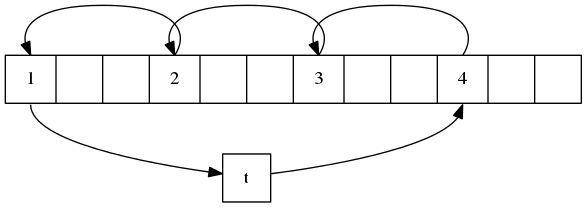
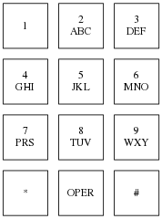

这里是编程珠玑（Programming Pearls）第一部分（前五个专栏）的笔记．
一个文件包含至多ｎ个不大于ｎ且无重复的正整数（ｎ＝１０＾７）．要求排序之后输出．
由于都是正整数且没有重复，可以用二进制串表示．对于二进制数组ｂｉｔ，如果整数ｉ存在，则让ｂｉｔ［ｉ］＝１，否则ｂｉｔ［ｉ］＝０．例如集合｛１，２，３，５，８，１３｝可以用二进制０１１１０１００１００００１００００００来表示．
下面分三步解决：
/* phase 1: initialize set to empty */ for i = [0, n) bit[i] = 0 /* phase 2: insert present elements into the set */ for each i in the input file bit[i] = 1 /* phase 3: write sorted output */ for i = [0, n) if bit[i] == 1 write i on the output file
由于不是基于比较的排序算法，时间复杂度为不受Ｏ（ｎ ｌｏｇ ｎ）的局限，此时为Ｏ（ｎ）．对于存在重复数值的情况也可以使用这个算法，只是要用整型数组来表示，
将一个长度为ｎ的向量ｘ左移ｉ位．当ｎ＝８，ｉ＝３时，对于向量ａｂｃｄｅｆｇｈ，左移之后为ｄｅｆｇｈａｂｃ．
记得在《数据结构》课上老师说过这是一个考研题目．下面给出两个时间复杂度为Ｏ（ｎ），空间复杂度为Ｏ（１）的算法．方法一比较繁琐，方法二则比较优美．
先从ｘ［０］开始，将ｘ［０］保存到变量ｔ中，将ｘ［ｉ］移到ｘ［０］中，ｘ［２＊ｉ］移到ｘ［ｉ］中．．．直到要从ｘ［０］中取数据时，将ｔ值取出移到相应位置．
如果向量中还有数据没有移动，然后从Ｘ［１］开始，将ｘ［１］保存到ｔ中．．．
直到ｘ中所有的数据都移动过了，结束．
对于ｎ＝１２，ｉ＝３的示意图：

图一 ｉ＝３，ｎ＝１２示意图
只用三步．
reverse(0, i-1) ⇒ /* cbadefgh */ reverse(i, n-1) ⇒ /* cbahgfed */ reverse(0, n-1) ⇒ /* defghabc */
给一个词典，从中查找所有的变位词（如ｐｏｔｓ，ｓｔｏｐ，ｔｏｐｓ，ｓｐｏｔ和ｐｏｓｔ是变位词）．
由于变位词是由相同的字母重新排列组成的，所以可以将字母按字母序重排作为它的标识值（ｓｉｇｎａｔｕｒｅ），题目中的例子的标识值即ｏｐｓｔ．然后按标识值对词典中的词进行排序，变位词由于标识值相同会相邻．这时只要比较相邻的词即可找出所有的变位词．
上世纪７０年代，贝尔实验室发明了一个电话簿软件．可以通过下图所示的标准键盘输入来查找号码．比如，对于Ｍｉｋｅ Ｌｅｓｋ，输入＂ＬＥＳＫ＊Ｍ＊＂（即＂５３７５＊６＊＂）就可以找到他的号码．如何实现？

图二 标准电话键
将名字的按键编码作为它的标识值，对于问题中的Ｍｉｋｅ Ｌｅｓｋ，标识值为＂５３７５＊６＊＂．然后将标识标识值作为第一关键字，名字作为第二关键字进行排序．当查找号码时利用二分查找即可．
从有序列表中查找一个数值ｔ．当ｔ有多个时，返回第一个．
这个问题比较简单，可以先利用常规的二分查找找到其中的一个ｔ，然后再向前查找第一个，但有个更简洁的方法．
l = -1; u = n while l+1 !=u /* invariant: x[l] < t && x[u] >=t && l < u */ m = (l + u) / 2 if x[m] < t l = m else u = m /* assert l+1 =u && x[l] < t && x[u] >=t */ p = u if p >=n || x[p] != t p = -1
由于始终保持ｘ［ｌ］＜ｔ且ｘ［ｕ］＞＝ｔ，又跳出循环时有ｌ＋１＝ｕ，故当ｘ［ｕ］＝ｔ时，一定是是第一个．
证明当ｘ是正整数时下面的这个程序定能终止．
while x != 1 do
if even(x)
x = x/2
else
x = 3*x+1
这是一个数学难题，目前无解．